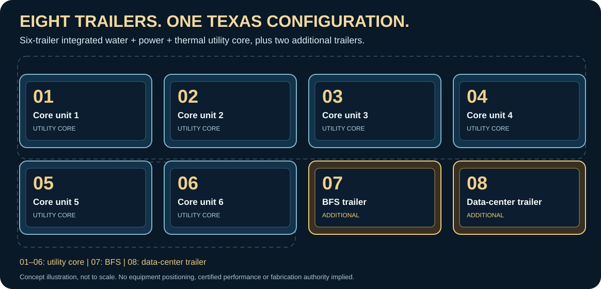
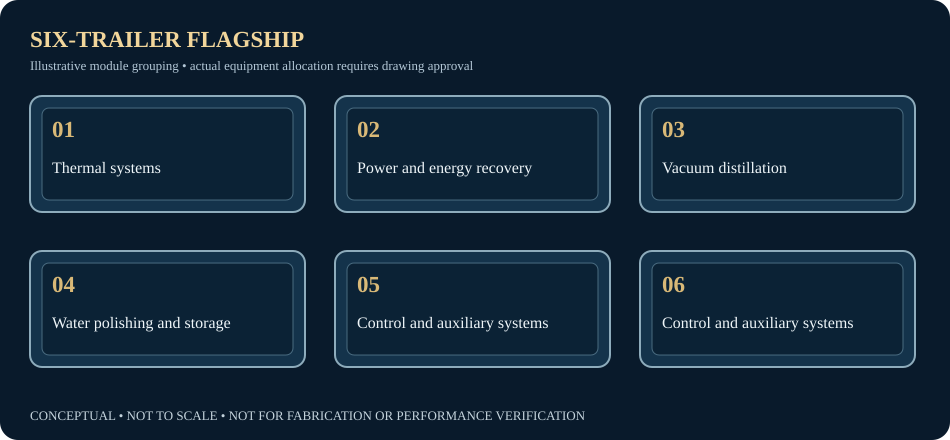

Open public viewing
Film and engineering illustrations
These conceptual illustrations are served from Trinity Continuum's public website. Select an image to open it full size in a browser tab—no Drive sign-in or permission request is needed.
Original films are embedded through HeyGen; their anonymous playback is checked separately. Visuals illustrate concepts, not installed systems, completed manufacturing, released CAD, or independently certified operating performance.
Public illustration gallery
Choose any image to view the original public-site SVG. For controlled engineering drawings and investor packages, use the professional source-review request; private files are not linked here.

Open full-size illustration
Open full-size illustration Open full-size illustration
Open full-size illustration Open full-size illustration
Open full-size illustration Open full-size illustration
Open full-size illustration Open full-size illustration
Open full-size illustration Open full-size illustration
Open full-size illustrationPublic viewing means the illustrated material is intentionally available without a login. It does not authorize distribution of underlying fabrication CAD, trade secrets, original editable files, investor financial records, or other controlled source documents.